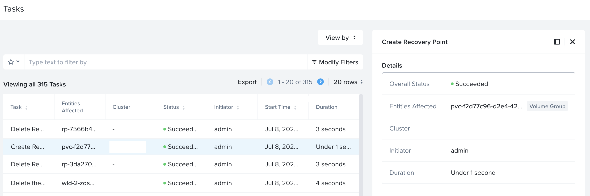

Recovering Application within the same K8S Cluster
In this lab we will deploy a sample workload (with Volumes and Files pvc), snapshot the Application components and recover.
Pre-requisites
- Nutanix Files Server Access for Dynamic Files SC
- Prism Element Access for Volumes SC
Design
In this lab, we will be replicating an application (workload) from one NKP cluster to another NKP cluster in the same Nutanix PC/PE environment.
There is one NKP cluster hosting the workload.
We will simulate a restore process.
The workload stores data in both Volumes and Dynamic Files CSI.
| # | PC | PE | NKP Cluster | Files Server | K8S Namespace |
|---|---|---|---|---|---|
| Source | PC-1 | PE-1 | nkpprimary |
filesprimary |
wordpress |
| Destination | PC-1 | PE-1 | nkpprimary |
filesprimary |
wordpress |
stateDiagram-v2
direction LR
State PC-1 {
State PE-1_FilesPrimary {
%% Start point within the lifecycle container
[*] --> Wordpress_App
state Wordpress_App {
[*] --> Wordpress
Wordpress --> Volumes(RWO) : MYSQL Storage
Wordpress --> Files(RWX) : Front-end Storage
}
state NDK_Snapshot {
Snapshot_Running --> Snapshot_Complete : Saving snapshot of Wordpress_App PVCs
}
state Disaster_Event {
System_Failure : Outage/Corruption
}
state NDK_Restore {
Restore_Process : Using latest snapshot
Restore_Process --> Wordpress_Resources : Restore
}
%% Define the flow inside the System_Lifecycle
Wordpress_App --> NDK_Snapshot : Snapshot initiated
NDK_Snapshot --> Wordpress_App : Snapshot successful
Wordpress_App --> Disaster_Event : Simulate system failure
Disaster_Event --> NDK_Restore : Initiate restore
NDK_Restore --> Wordpress_App : Restore complete
%% End point for the entire lifecycle
Wordpress_App --> [*] : App available
}
}Deploying Storage Classes
In this section we will deploy Nutanix Volumes and Files based StorageClass for our application to use.
Volumes Storage Class
We will be using the Nutanix Volumes StorageClass (SC) to provide storage to our application.
NKP installs a Nutanix Volumes based storage class by default called nutanix-volumes.
Need to create a separate Volumes StorageClass?
If a separate Nutanix volumes based StorageClass needs to deployed it can be done as follows:
-
Create a secret
-
Create a volumes storage class
kind: StorageClass apiVersion: storage.k8s.io/v1 metadata: name: custom-nutanix-volumes annotations: storageclass.kubernetes.io/is-default-class: "true" provisioner: csi.nutanix.com parameters: csi.storage.k8s.io/provisioner-secret-name: ntnx-pe-secret csi.storage.k8s.io/provisioner-secret-namespace: openshift-cluster-csi-drivers csi.storage.k8s.io/node-publish-secret-name: ntnx-pe-secret csi.storage.k8s.io/node-publish-secret-namespace: openshift-cluster-csi-drivers csi.storage.k8s.io/controller-expand-secret-name: ntnx-pe-secret csi.storage.k8s.io/controller-expand-secret-namespace: openshift-cluster-csi-drivers csi.storage.k8s.io/controller-publish-secret-name: ntnx-pe-secret csi.storage.k8s.io/controller-publish-secret-namespace: openshift-cluster-csi-drivers csi.storage.k8s.io/fstype: ext4 storageContainer: default # <<< Make sure this Storage Container is present in the Nutanix cluster storageType: NutanixVolumes #description: "description added to each storage object created by the driver" #hypervisorAttached: ENABLED allowVolumeExpansion: true reclaimPolicy: Delete -
Modify environment specific volumes and apply both
SecretandStorageClassresources.
Files Storage Class
We need to create a Dynamic Files based storage class for use with our application. Dynamically provisioned shares have one-to-one mapping with persistent volumes (PVs): each PV has a dedicated share for storage.
-
On
VSCodemenu, selectTerminal>New Terminal -
Browse to
ndkdirectory -
Source the .env file
-
Get the following from PC GUI > Files for the Files server that needs to be used for
pvcof Wordpress applicationnfsServerName- display name of the Files servernfsServer- FQDN of the Files server
-
Add (append) the following environment variables and save it
-
Create a dynamic Files
StorageClasskubectl apply -f -<<EOF allowVolumeExpansion: true kind: StorageClass apiVersion: storage.k8s.io/v1 metadata: name: $NFS_SC_NAME provisioner: csi.nutanix.com parameters: dynamicProv: ENABLED nfsServerName: $NFS_SERVER_NAME nfsServer: $NFS_SERVER_FQDn storageType: NutanixFiles squashType: none reclaimPolicy: Delete volumeBindingMode: Immediate EOFkubectl apply -f -<<EOF allowVolumeExpansion: true kind: StorageClass apiVersion: storage.k8s.io/v1 metadata: name: nutanix-files-dynamic provisioner: csi.nutanix.com parameters: dynamicProv: ENABLED nfsServerName: filesprimary nfsServer: filesprimary.example.com storageType: NutanixFiles squashType: none reclaimPolicy: Delete volumeBindingMode: Immediate EOF -
List and make a note of the Volumes and Files StorageClass names for use with next section
Deploying Wordpress Application
-
On
VSCodemenu, selectTerminal>New Terminal -
Browse to
ndkdirectory -
Create a wordpress namespace
-
Create the MySQL workload file with Volumes RWO StorageClass
cat << EOF > mysql_deployment.yaml apiVersion: v1 kind: Service metadata: name: wordpress-mysql namespace: wordpress labels: app: wordpress spec: ports: - port: 3306 selector: app: wordpress tier: mysql clusterIP: None --- apiVersion: v1 kind: PersistentVolumeClaim metadata: name: mysql-pv-claim namespace: wordpress labels: app: wordpress spec: accessModes: - ReadWriteOnce storageClassName: nutanix-volume resources: requests: storage: 2Gi --- apiVersion: apps/v1 kind: Deployment metadata: name: wordpress-mysql namespace: wordpress labels: app: wordpress spec: selector: matchLabels: app: wordpress tier: mysql strategy: type: Recreate template: metadata: labels: app: wordpress tier: mysql spec: containers: - image: mysql:5.6 name: mysql env: - name: MYSQL_ROOT_PASSWORD valueFrom: secretKeyRef: name: mysql-pass key: password ports: - containerPort: 3306 name: mysql volumeMounts: - name: mysql-persistent-storage mountPath: /var/lib/mysql volumes: - name: mysql-persistent-storage persistentVolumeClaim: claimName: mysql-pv-claim EOF -
Create the Wordpress workload file with Files RWX StorageClass
cat << EOF > wordpress_deployment.yaml apiVersion: v1 kind: Service metadata: name: wordpress namespace: wordpress labels: app: wordpress spec: ports: - port: 80 selector: app: wordpress tier: frontend type: ClusterIP --- apiVersion: v1 kind: PersistentVolumeClaim metadata: name: wp-pv-claim namespace: wordpress labels: app: wordpress spec: accessModes: - ReadWriteMany storageClassName: $NFS_SC_NAME resources: requests: storage: 2Gi --- apiVersion: apps/v1 kind: Deployment metadata: name: wordpress namespace: wordpress labels: app: wordpress spec: selector: matchLabels: app: wordpress tier: frontend strategy: type: Recreate template: metadata: labels: app: wordpress tier: frontend spec: containers: - image: wordpress:4.8-apache name: wordpress env: - name: WORDPRESS_DB_HOST value: wordpress-mysql - name: WORDPRESS_DB_PASSWORD valueFrom: secretKeyRef: name: mysql-pass key: password ports: - containerPort: 80 name: wordpress volumeMounts: - name: wordpress-persistent-storage mountPath: /var/www/html volumes: - name: wordpress-persistent-storage persistentVolumeClaim: claimName: wp-pv-claim EOF -
Create kustomization file to specify MySQL password
-
Apply the kustomization file to create Wordpress application
-
Watch the workload components until they are running
~ ❯ kubectl get all # NAME READY STATUS RESTARTS AGE pod/wordpress-6bc48cbf79-862wm 1/1 Running 0 6m pod/wordpress-mysql-7bd9d456c5-hxjr7 1/1 Running 0 6m NAME TYPE CLUSTER-IP EXTERNAL-IP PORT(S) AGE service/wordpress ClusterIP 10.109.161.32 <none> 80/TCP 6m service/wordpress-mysql ClusterIP None <none> 3306/TCP 6m NAME READY UP-TO-DATE AVAILABLE AGE deployment.apps/wordpress 1/1 1 1 6m deployment.apps/wordpress-mysql 1/1 1 1 6m NAME DESIRED CURRENT READY AGE replicaset.apps/wordpress-6bc48cbf79 1 1 1 6m replicaset.apps/wordpress-mysql-7bd9d456c5 1 1 1 6m
Expose Wordpress App for External Access
We will use the Traefik Ingress Controller that comes with NKP to expose Wordpress app.
-
Get the IP address of the Traefik Ingress Controller (see ADDRESS Column)
-
Use the IP in the following manifest and create an Ingress
Populate Wordpress with Data
-
Login to the Wordpress app by using a browser with network connectivity to Ingress IP address
-
Copy the URL and paste in a browser in your Mac/PC
-
You should see a configuration page

-
Select English - United States and click on Continue
-
Fill in the following fields as shown in the figure below

-
Note the auto-generated password and copy it somewhere safe. You are also free to use your own password.
-
You should see a installation confirmation page

You will get re-directed to login page
-
Login to the wordpress site using admin and the password you used to install wordpress application
-
You will see the wordpress administration page
-
Lets populate some data by creating a new admin user
-
Click on Users > Add New

-
Fill in the following fields as shown in the figure below

-
Click on Add New User
-
You will be able to see the list of users

You have successfully set up Wordpress application with mysql backend. In the next section we will take a snapshot and restore a deleted Wordpress user using Nutanix NDK.
NDK Snapshot and Recover to the Same Namespace
We will need to establish a relationship between Nutanix Files servers that we will be replicating to and from as we now have a RWX based Files share mounted as a pvc in the Wordpress app.
This FileServerReplicationRelationships resource will be used for snapshot replication for the shares that we will be replicating.
-
Add (append) the following environment variables and save it
-
Source the
.envfile to load new environment variables -
Create a
FileServerReplicationRelationshipsobject on the primary NKPnkpprimarycluster -
Define a NDK
Applicationcustom resource to take a snapshot of all the objects in wordpress namespace -
Take a local cluster snapshot of the
wordpressapplication -
View the progress
Wait until the status of snapshot becomes true~ ❯ kubectl get applicationsnapshot -w Name: asc-0fecc22d-8b03-44ba-a2da-98d917eca3c3 Namespace: Labels: <none> Annotations: dataservices.nutanix.com/deletion-in-progress: true API Version: dataservices.nutanix.com/v1alpha1 Kind: ApplicationSnapshotContent Metadata: Creation Timestamp: 2025-12-03T07:50:01Z Deletion Grace Period Seconds: 0 Deletion Timestamp: 2025-12-03T09:19:17Z Finalizers: dataservices.nutanix.com/app-snap-content Generation: 2 Resource Version: 25048459 UID: 486be529-4eab-4caf-9d20-b323b34cd388 Spec: Application Snapshot Ref: Name: wordpress-app-snapshot Namespace: word Force Delete Files Snapshot: false Source: Application Ref: Name: wordpress-app Namespace: word Status: Application Snapshot Summary: Application Snapshot Handle: Volume Claim Handle Map: Mysql - Pv - Claim: NutanixVolumes-52acd508-9fb8-43b0-4fee-4629751d48fb Wp - Pv - Claim: NutanixFiles-dynamic-OTE4NWIyZTctMDFhMi00ZmQyLTliNzQtOTljMjU1NzlmYmVi-pvc-5c603600-75aa-46b7-ba95-45853d0ce0f0 Volume Snapshot Handle Map: NutanixFiles-dynamic-OTE4NWIyZTctMDFhMi00ZmQyLTliNzQtOTljMjU1NzlmYmVi-pvc-5c603600-75aa-46b7-ba95-45853d0ce0f0: NutanixFiles-49559e6c-f066-4c5b-5ec0-409bf6a4d5eb:NutanixFiles-dynamic-OTE4NWIyZTctMDFhMi00ZmQyLTliNzQtOTljMjU1NzlmYmVi-pvc-5c603600-75aa-46b7-ba95-45853d0ce0f0 Conditions: Last Transition Time: 2025-12-03T09:19:17Z Message: Deleting volume snapshots Observed Generation: 2 Reason: DeletingVolumeSnapshots Status: True Type: Progressing Last Transition Time: 2025-12-03T07:50:03Z Message: completed acquiring application configuration Observed Generation: 1 Reason: AcquiredAppConfig Status: True Type: AppConfigAcquired Last Transition Time: 2025-12-03T07:50:33Z Message: created snapshots of persistent volumes Observed Generation: 1 Reason: VolumeSnapshotCreationSucceeded Status: True Type: VolumeSnapshotsCreated Last Transition Time: 2025-12-03T07:50:33Z Message: ApplicationSnapshot finalized and stored Observed Generation: 1 Reason: ApplicationSnapshotFinalized Status: True Type: ApplicationSnapshotFinalized Consistency Type: NoConsistencyGuarantee Creation Time: 2025-12-03T07:50:33Z Ready To Use: false -
Inspect the applicationSnapshotContent information to see if both Volumes and Files pvc are captured in the snapshot
Relationship between NDK custom resources
We can observe that the
ApplicationSnapshotandApplicationSnapshotContentNDK_Snapshot custom resources are related.ApplicationSnapshotContentalso shows the Nutanix infrastructure components of theApplicationSnapshotsuch as Nutanix Volumes and Files.Refer to the highlighted parts in the following command output.
~ ❯ kubectl describe applicationsnapshotcontent asc-0fecc22d-8b03-44ba-a2da-98d917eca3c3 # Name: asc-0fecc22d-8b03-44ba-a2da-98d917eca3c3 Namespace: Labels: <none> Annotations: dataservices.nutanix.com/deletion-in-progress: true API Version: dataservices.nutanix.com/v1alpha1 Kind: ApplicationSnapshotContent Metadata: Creation Timestamp: 2025-12-03T07:50:01Z Deletion Grace Period Seconds: 0 Deletion Timestamp: 2025-12-03T09:19:17Z Finalizers: dataservices.nutanix.com/app-snap-content Generation: 2 Resource Version: 25048459 UID: 486be529-4eab-4caf-9d20-b323b34cd388 Spec: Application Snapshot Ref: Name: wordpress-app-snapshot Namespace: word Force Delete Files Snapshot: false Source: Application Ref: Name: wordpress-app Namespace: word Status: Application Snapshot Summary: Application Snapshot Handle: Volume Claim Handle Map: Mysql - Pv - Claim: NutanixVolumes-52acd508-9fb8-43b0-4fee-4629751d48fb Wp - Pv - Claim: NutanixFiles-dynamic-OTE4NWIyZTctMDFhMi00ZmQyLTliNzQtOTljMjU1NzlmYmVi-pvc-5c603600-75aa-46b7-ba95-45853d0ce0f0 Volume Snapshot Handle Map: NutanixFiles-dynamic-OTE4NWIyZTctMDFhMi00ZmQyLTliNzQtOTljMjU1NzlmYmVi-pvc-5c603600-75aa-46b7-ba95-45853d0ce0f0: NutanixFiles-49559e6c-f066-4c5b-5ec0-409bf6a4d5eb:NutanixFiles-dynamic-OTE4NWIyZTctMDFhMi00ZmQyLTliNzQtOTljMjU1NzlmYmVi-pvc-5c603600-75aa-46b7-ba95-45853d0ce0f0 Conditions: Last Transition Time: 2025-12-03T09:19:17Z Message: Deleting volume snapshots Observed Generation: 2 Reason: DeletingVolumeSnapshots Status: True Type: Progressing Last Transition Time: 2025-12-03T07:50:03Z Message: completed acquiring application configuration Observed Generation: 1 Reason: AcquiredAppConfig Status: True Type: AppConfigAcquired Last Transition Time: 2025-12-03T07:50:33Z Message: created snapshots of persistent volumes Observed Generation: 1 Reason: VolumeSnapshotCreationSucceeded Status: True Type: VolumeSnapshotsCreated Last Transition Time: 2025-12-03T07:50:33Z Message: ApplicationSnapshot finalized and stored Observed Generation: 1 Reason: ApplicationSnapshotFinalized Status: True Type: ApplicationSnapshotFinalized Consistency Type: NoConsistencyGuarantee Creation Time: 2025-12-03T07:50:33Z Ready To Use: true -
The NDK_Snapshot controller manager will also have logs of the snapshot operation. This will be useful for troubleshooting purposes
~ ❯ kubectlubectl logs -f -n ntnx-system deploy/ndk-controller-manager {"level":"info","timestamp":"2025-07-08T01:35:12.909Z","caller":"applicationsnapshotcontent/asc_finalize.go:38","msg":"resource regulated: ApplicationSnapshotContent's finalize phase is waiting to be processed","controller":"applicationsnapshotcontent","controllerGroup":"dataservices.nutanix.com","controllerKind":"ApplicationSnapshotContent","ApplicationSnapshotContent":{"name":"asc-3c1e253a-266d-46fd-8559-d8aa189fea78"},"namespace":"","name":"asc-3c1e253a-266d-46fd-8559-d8aa189fea78","reconcileID":"a0cf1641-40d7-4d51-b948-10cf9bae84e0","requestId":"7566b4fa-0eda-4ffd-b34e-76daf2311148"} {"level":"info","timestamp":"2025-07-08T01:35:13.381Z","caller":"utils/controller.go:36","msg":"Ensuring finalizer on objects","controller":"applicationsnapshot","controllerGroup":"dataservices.nutanix.com","controllerKind":"ApplicationSnapshot","ApplicationSnapshot":{"name":"wordpress-app-snapshot","namespace":"default"},"namespace":"default","name":"wordpress-app-snapshot","reconcileID":"5af23527-5d34-4992-ab02-99ba4af2a401","finalizer":"dataservices.nutanix.com/app-snap-2a003355dcfd33a75426095a4a71154b"} -
Observe the event
Create Recovery Pointoperation in Prism Central
-
Delete the app to simulate a failure
-
Restore the app from
applicationSnapshotcustom resource -
Monitor the progress of
ApplicationSnapshotRestorecustom resourceWait until the status of restore becomes true~ ❯ kubectl get applicationsnapshotrestore.dataservices.nutanix.com/wordpress-restore -w NAME SNAPSHOT-NAME COMPLETED wordpress-restore wordpress-app-snapshot false wordpress-restore wordpress-app-snapshot false wordpress-restore wordpress-app-snapshot false wordpress-restore wordpress-app-snapshot true -
Verify if Wordpress app resources (pod,pvc, etc) are restored
~ ❯ kubectl get all NAME READY STATUS RESTARTS AGE pod/wordpress-6bc48cbf79-862wm 1/1 Running 0 6m pod/wordpress-mysql-7bd9d456c5-hxjr7 1/1 Running 0 6m NAME TYPE CLUSTER-IP EXTERNAL-IP PORT(S) AGE service/wordpress ClusterIP 10.109.161.32 <none> 80/TCP 6m service/wordpress-mysql ClusterIP None <none> 3306/TCP 6m NAME READY UP-TO-DATE AVAILABLE AGE deployment.apps/wordpress 1/1 1 1 6m deployment.apps/wordpress-mysql 1/1 1 1 6m NAME DESIRED CURRENT READY AGE replicaset.apps/wordpress-6bc48cbf79 1 1 1 6m replicaset.apps/wordpress-mysql-7bd9d456c5 1 1 1 6m -
Login to Wordpress GUI to check if the deleted user is now present

You have succesfully restored the Wordpress application with Files and Volumes pvc among other resources.